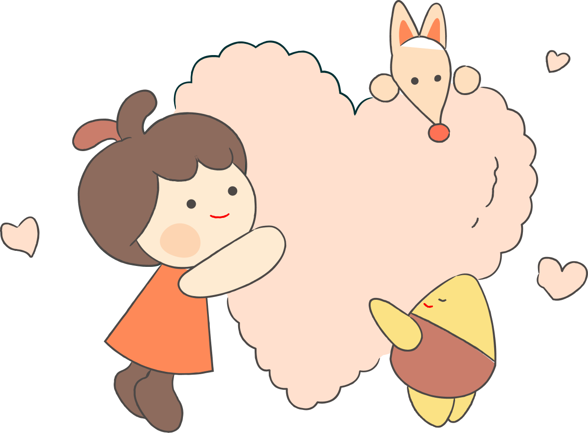

공감과 훈육
#1. 공감과 훈육: 무엇부터? 어떻게?공감과 훈육 1,2,3

어떤 누구는…아이의 마음을 인정하고 공감해주는 것이
중요하다고 합니다. 또 다른 누구는…공감해주며 키우다
사회가 망가지고 있다며 훈육이 더 중요하다고도
합니다. 어떤 상황에서 공감을 해줘야 하고, 언제
훈육을 해야 하는 것인지 혼란스럽기만 합니다. 앞으로
(4개월)간 공감과 훈육의 기본 원칙과 기술에 대해
알려드리겠습니다. 꼭 필요한 공감과 훈육의 기술들을
잘 활용하여 양육에 도움이 되시기를 바랍니다.
1. 공감과 훈육 :
무엇부터? 어떻게?
공감이란?
“상대방의 감정에 대해 수긍과 인정을 해주는 것” 을 말합니다. 공감은 상대와 똑같은 마음을 느끼는 것이 아닙니다. 아이의 감정에 대해 옳고 그름의 판단을 할 필요가 없습니다. 그냥 상대방의 마음을 인정해주는 것이 공감입니다. 무엇보다 왜 아이가 이러한 마음을 느꼈는지 이해하려는 마음이 중요합니다.훈육이란?
“사회의 한 구성원으로서 살아가야 될 도리와
이치를 가르치는 것”입니다. 사람이라면 알아야할 기본적인 옳고
그름의 판단과 그에 맞는 행동을 가르치는
것이지요.
훈육은 당장의 행동을 변화시키는 것이 목표가
아닙니다. 장기적인 관점에서 아이가 스스로 조절해
나갈 수 있도록 이끌어주고 도와주는 것입니다.
아이를 양육한다면 반드시 필요한 양육자의 역할 중
하나이지요. 훈육하는 것에 대한 죄책감은 갖지
마세요. 올바른 훈육은 아이와의 관계를 더
단단하게 해줍니다. 공감과 훈육 모두에서 가장
중요한 것은 아이를 한 인간으로서 존중하는
마음입니다. 아이를 잘 키워내기 위해서는 공감과
훈육 둘 다 꼭 필요합니다.
“마음은 공감해주고,
행동은 제한해주세요.”
행동은 제한해주세요.”